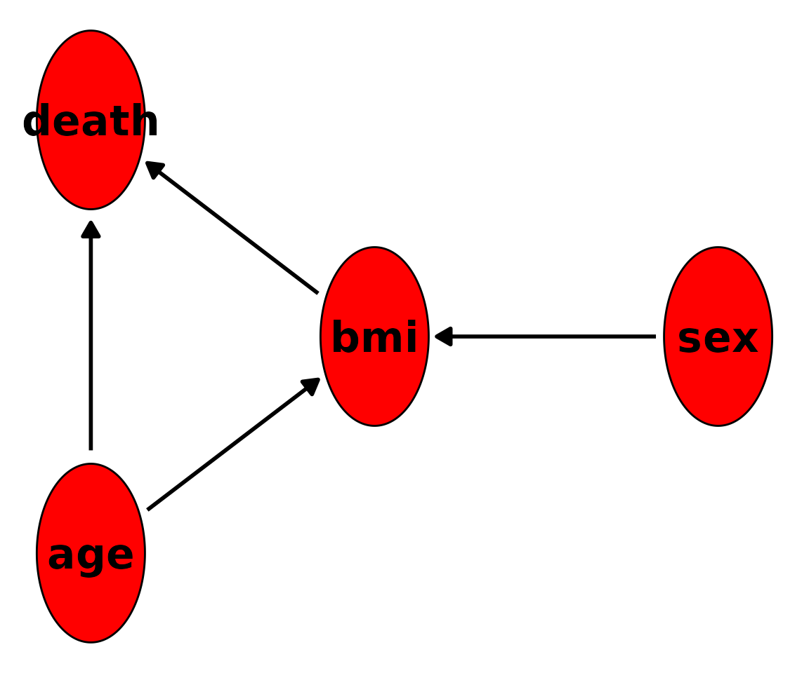

Simulating Data from a known DAG
Robin Denz
Source:vignettes/v_sim_from_dag.Rmd
v_sim_from_dag.RmdIntroduction
In this small vignette, we introduce the sim_from_dag()
function, which can be used to simulate complex data from arbitrary
causal directed acyclic graphs (DAGs). The simulated data may include
continuous, binary, categorical, count or time-to-event variables. This
function is most useful if the DAG is static, meaning that there are no
time-varying variables. It is theoretically possible to use this
function to simulate data from DAGs with a time structure as well, but
there are some difficulties associated with it that will be discussed
later.
What are causal DAGs and why use them?
A causal DAG is a DAG in which all nodes correspond to variables and the directed edges correspond to direct causal relationships between these variables. A direct edge from node to node implies that there is direct causal effect of on . On the other hand, if there is no edge from node to node , there is no direct causal relationship between these variables. Using a DAG in this way makes it easy to encode the causal structure of a given system, which is very useful for causal inference. This general idea is a centerpiece of the structural approach to causality developed by Pearl (2002) and Spirtes et al. (1993). We strongly encourage the reader to make themselves familiar with some of this literature before moving on.
It is very simple to generate data from a defined causal DAG. To see why we first need to introduce the concept of root nodes and child nodes. A root node is a node in a DAG that does not have any edges pointing to it (no incoming arrows). A child node on the other hand is a node that has at least one incoming edge. In other words, root nodes have no direct causes but child nodes do. Every node pointing into another node is considered a parent of that child node. For example, consider the DAG in figure 1.

A small DAG with four nodes
Nodes and are root nodes because they do not have any directed edges pointing into them. Nodes and on the other hand are child nodes. The parents of node are both and because both of these nodes have directed edge towards . Note that node is not a parent of node because there is no edge from to .
As the name implies, DAGs do not have cycles. Therefore every DAG has at least one root node. Generating data for these nodes is the first step to simulate data for the whole DAG. Since root nodes have no parents, we can simply generate random data from them using an appropriate distribution. Once we have data for all root nodes, we can generate their directly connected child nodes next as a function of the root nodes (and perhaps additional random error). These direct child nodes are then used as input for the next child nodes in line and so on. This continues until every node has been generated. Since every DAG can be topologically sorted (Chickering 1995), this will always work. All we need is to specify the DAG and the functional relationship between each node and its parents.
Defining the DAG
Because the sim_from_dag() function uses the method
described above, it requires information about the causal structure and
the exact form of the relationship between child nodes and their
parents. All of this information has to be included in the
dag argument, which should be a DAG object
created using the empty_dag() function and grown using
node() calls as described below. This can be done
completely manually (which is the usual strategy when conducting
simulation studies) or (partially) using existing data (which may be
useful when the interest is in getting a toy data set resembling real
data as closely as possible).
Regardless of which strategy you want to use, first you have to
initialize an empty DAG object like this:
Afterwards you can add an unlimited amount of root nodes and child nodes to it. Multiple different types are implemented.
Root node types
The values for the root_nodes are simply sampled from
some defined distributions. Therefore, any function that generates
random draws from some distribution may be used here. Popular
alternatives for continuous data are the normal-, beta-,
gamma-distributions which are implemented in base R inside the
rnorm(), rbeta() and rgamma()
functions. For binary or categorical data we could use the custom
functions rbernoulli() or rcategorical()
instead.
Child node types
The simDAG package implements the following types of
child_nodes directly:
-
node_gaussian: A node based on linear regression (continuous data). -
node_binomial: A node based on logistic regression (binary data). -
node_multinomial: A node based on multinomial logistic regression (categorical data). -
node_poisson: A node based on poisson regression (count data). -
node_negative_binomial: A node based on negative binomial regression (count data). -
node_cox: A node based on cox regression (time-to-event data). -
node_conditional_prob: A node based on conditional probabilities (binary / categorical data). -
node_conditional_distr: A node based on conditional distributions (any data type).
All of these nodes have their own documentation page containing a
detailed description on how data is generated from them. Although this
collection of nodes covers a lot of data types, it is still a somewhat
limited collection. If, for example, we wanted to add a child node that
is normally distributed but also truncated at specific values, we could
not do this using just the offered node functions. For this reason, the
sim_from_dag() function also allows the user to use custom
functions as nodes, which makes it possible to model any kind of data
and any kind of relationship.
Defining nodes manually
Suppose that node
in the figure above stands for age,
stands for sex,
stands for the Body-Mass-Index (BMI) and
stands for death. We have to start by defining what the
root nodes should look like. We use the following code to define
age and sex:
All nodes are defined by calling the node() function and
adding the output to the dag object using a simple
+. This syntax is heavily inspired by the
simCausal R-package (Sofrygin et al. 2017). Here, we assume
that age is a continuous normally distributed variable with
a mean of 50 and a standard deviation of 4 (If this was a real
simulation study we would probably use a truncated normal distribution
to ensure that age is not negative). This can be done by setting the
dist parameter to "rnorm", which is the
standard R function for generating random values from a normal
distribution. All arguments listed in the params parameter
will be passed to this function. Similarly, we define sex
to be a Bernoulli distributed variable (taking only the values 0/1). We
assume that there is an even gender distribution by setting
p = 0.5.
Next, we have to define what the relationship between the child nodes and their parents should look like. We may use the following code:
dag <- dag +
node("bmi", type="gaussian", parents=c("sex", "age"), betas=c(1.1, 0.4),
intercept=12, error=2) +
node("death", type="binomial", parents=c("age", "bmi"), betas=c(0.1, 0.3),
intercept=-15)Since the bmi node is dependent on both sex
and age, we have to list both of these nodes as the parents
of bmi. We then specify that the bmi should be
a continuous variable modeled using a linear regression by setting
type="gaussian". The concrete regression equation is
defined through the use of the intercept,
betas and error arguments. Our specification
for the bmi node corresponds to the following equation:
where indicates that the error term is modelled as a normally distributed variable with mean 0 and a standard deviation of 2.
Since death has only two states (alive vs. dead), we use
a logistic regression model here instead. We can do this easily by
setting type="binomial". The rest of the syntax essentially
stays the same. The regression equation for death as
described by the code above is then:
To check whether we got the causal relationships right, we can call
the plot() function on the DAG object. The output should
look very similar to the hand-drawn DAG above.
plot(dag)
#> Loading required namespace: ggforce
We can also directly print the underlying structural equations using
the summary() function:
summary(dag)
#> A DAG object using the following structural equations:
#>
#> age ~ N(50, 4)
#> sex ~ Bernoulli(0.5)
#> bmi ~ N(12 + 1.1*sex + 0.4*age, 2)
#> death ~ Bernoulli(logit(-15 + 0.1*age + 0.3*bmi))This is all correct. We can now use this DAG object to
generate random data using the sim_from_dag() function:
set.seed(42)
sim_dat <- sim_from_dag(dag=dag, n_sim=10000)Setting a seed for the random number generator is necessary to obtain replicable results. The data generated using this code looks like this:
head(sim_dat, 5)
#> age sex bmi death
#> <num> <lgcl> <num> <lgcl>
#> 1: 55.48383 TRUE 33.25311 FALSE
#> 2: 47.74121 FALSE 29.58815 FALSE
#> 3: 51.45251 FALSE 30.12967 FALSE
#> 4: 52.53145 TRUE 32.07877 FALSE
#> 5: 51.61707 FALSE 36.09082 TRUEBinary variables such as sex and death are
by default treated as logical variables, because this is the most memory
efficient way to store them. We can now check the distributions and
relationships in this dataset to confirm that it indeed corresponds to
our specified causal DAG. Starting with the root nodes:
hist(sim_dat$age)
table(sim_dat$sex)
#>
#> FALSE TRUE
#> 5051 4949This seems to be correct. Note that this is a finite dataset, which
means that the results will never exactly match the theoretical
distributions. But it’s definitely close enough here. To check if the
child nodes were modeled correctly, we simply fit the corresponding
models using the glm() function:
mod_bmi <- glm(bmi ~ age + sex, data=sim_dat, family="gaussian")
summary(mod_bmi)
#>
#> Call:
#> glm(formula = bmi ~ age + sex, family = "gaussian", data = sim_dat)
#>
#> Coefficients:
#> Estimate Std. Error t value Pr(>|t|)
#> (Intercept) 12.184254 0.253188 48.12 <2e-16 ***
#> age 0.396020 0.005039 78.58 <2e-16 ***
#> sexTRUE 1.177159 0.040563 29.02 <2e-16 ***
#> ---
#> Signif. codes: 0 '***' 0.001 '**' 0.01 '*' 0.05 '.' 0.1 ' ' 1
#>
#> (Dispersion parameter for gaussian family taken to be 4.112615)
#>
#> Null deviance: 70134 on 9999 degrees of freedom
#> Residual deviance: 41114 on 9997 degrees of freedom
#> AIC: 42524
#>
#> Number of Fisher Scoring iterations: 2
mod_death <- glm(death ~ age + bmi, data=sim_dat, family="binomial")
summary(mod_death)
#>
#> Call:
#> glm(formula = death ~ age + bmi, family = "binomial", data = sim_dat)
#>
#> Coefficients:
#> Estimate Std. Error z value Pr(>|z|)
#> (Intercept) -14.319144 0.371511 -38.54 <2e-16 ***
#> age 0.093229 0.007057 13.21 <2e-16 ***
#> bmi 0.289714 0.011331 25.57 <2e-16 ***
#> ---
#> Signif. codes: 0 '***' 0.001 '**' 0.01 '*' 0.05 '.' 0.1 ' ' 1
#>
#> (Dispersion parameter for binomial family taken to be 1)
#>
#> Null deviance: 13773 on 9999 degrees of freedom
#> Residual deviance: 11805 on 9997 degrees of freedom
#> AIC: 11811
#>
#> Number of Fisher Scoring iterations: 3Evidently, the coefficients do match the causal coefficients we specified earlier.
Defining nodes using existing data
If the data should resemble a specific real data set, it makes sense
to base the values for the causal coefficients on that specific data
set. This can be done by fitting a single model for each child node,
extracting the estimated coefficients from the fitted models and putting
those into an appropriate DAG object. If the assumed DAG is
big, this can be a time-extensive task. The dag_from_data()
function automates this process. This function takes a node list
containing only minimal information about the causal structure and node
type and outputs a fully specified DAG object.
For example, lets assume that the data we just generated
(sim_dat) was our data set of interest. Let us also assume
that we know the true underlying causal diagram and have a rough idea
about the nature of the relationship between the nodes (e.g. we know or
can reasonably guess the node type). Now all we have to do is create a
partially specified DAG in accordance to these assumptions
first:
dag <- empty_dag() +
node("age", type="rnorm") +
node("sex", type="rbernoulli") +
node("bmi", type="gaussian", parents=c("sex", "age")) +
node("death", type="binomial", parents=c("age", "bmi"))This looks a lot like the code used above, except that we are not
explicitly defining the actual beta coefficients. We only define the
causal structure and the node types. Now we can call the
dag_from_data() function:
est_dag <- dag_from_data(dag=dag, data=sim_dat)It returns an object that includes a fully specified
DAG, which can be used directly in the
sim_from_dag() function:
sim_dat2 <- sim_from_dag(dag=est_dag$dag, n_sim=10000)The dag_from_data() function essentially just fits the
corresponding models one by one for each node and extracts the relevant
data from the models to fill in the gaps in the empty nodes. If we set
return_models to TRUE in the
dag_from_data() function call above, we can actually see
that it used the exact same models we fit earlier to check if the
simulation was valid.
Time-varying covariates
Most real data sets include time-varying covariates, e.g. variables
that are measured at multiple points in time that are subject to
changes. It is possible to generate this type of data using the
sim_from_dag() function as well. All we need to do is to
define an appropriate DAG that directly specifies how the
variables change over time. For example, we can extend the simple
DAG from above to include a dimension of time:

A small DAG with four nodes
Here, nodes
and
are time-constant variables that only have a causal effect on the
initial state of
and
,
while nodes
and
change over time interdependently. If we want to simulate data from a
DAG that looks like this using the sim_from_dag() function,
we have to add a node to the for every point in time that we want to
consider.
We will quickly go through a somewhat simpler example, considering only 2 points in time. We define our nodes in the following way:
dag <- empty_dag() +
node("age", type="rnorm", mean=50, sd=4) +
node("sex", type="rbernoulli", p=0.5) +
node("bmi_t1", type="gaussian", betas=c(1.1, 0.4), parents=c("sex", "age"),
intercept=12, error=2) +
node("death_t1", type="binomial", parents=c("age", "sex", "bmi_t1"),
betas=c(0.1, 0.3, 0.1), intercept=-15) +
node("bmi_t2", type="gaussian", parents="bmi_t1", betas=c(1.1), intercept=0,
error=2) +
node("death_t2", type="binomial", betas=c(0.1, 0.3),
parents=c("age", "bmi_t2"), intercept=-15)
sim_dat <- sim_from_dag(dag=dag, n_sim=10000)In this example, the bmi at
is a function of both sex and age, but the
bmi at
is only a function of the previous bmi. The
death node is determined by the initial age
and by the time-varying bmi. This surely is not the most
realistic example. It is only meant to show how the
sim_from_dag() function may be used to incorporate
time-dependent covariates. If many points in time should be considered
or there are very complex time-dependent structures that may not be
easily described using a DAG like the one above, the
sim_discrete_time() function also included in this package
may be used instead.
References
Judea Pearl (2009). Causality: Models, Reasoning and Inference. 2nd ed. Cambridge: Cambridge University Press
Peter Spirtes, Clark Glymour, and Richard Scheines (2000) Causation, Prediction, and Search. 2nd ed. The MIT Press, Cambridge
Chickering, D.M. (1995). A transformational characterization of equivalent Bayesian network structures. Proceedings of the 11th Conference on Uncertainty in Artificial Intelligence, Montreal, Canada, 87-98.
Oleg Sofrygin, Mark J. van der Laan, and Romain Neugebauer (2017). simcausal R Package: Conducting Transparent and Reproducible Simulation Studies of Causal Effect Estimation with Complex Longitudinal Data. In: Journal of Statistical Software. 81.2, pp. 1-47